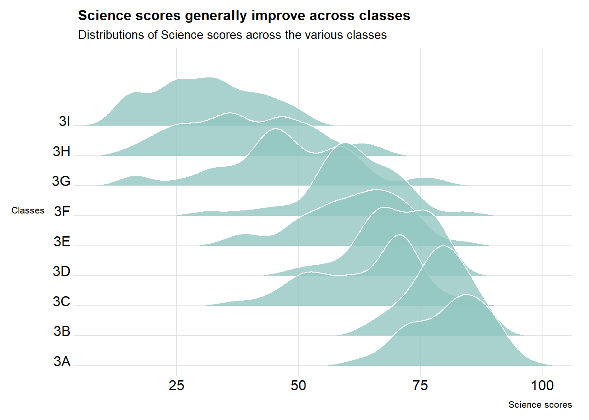
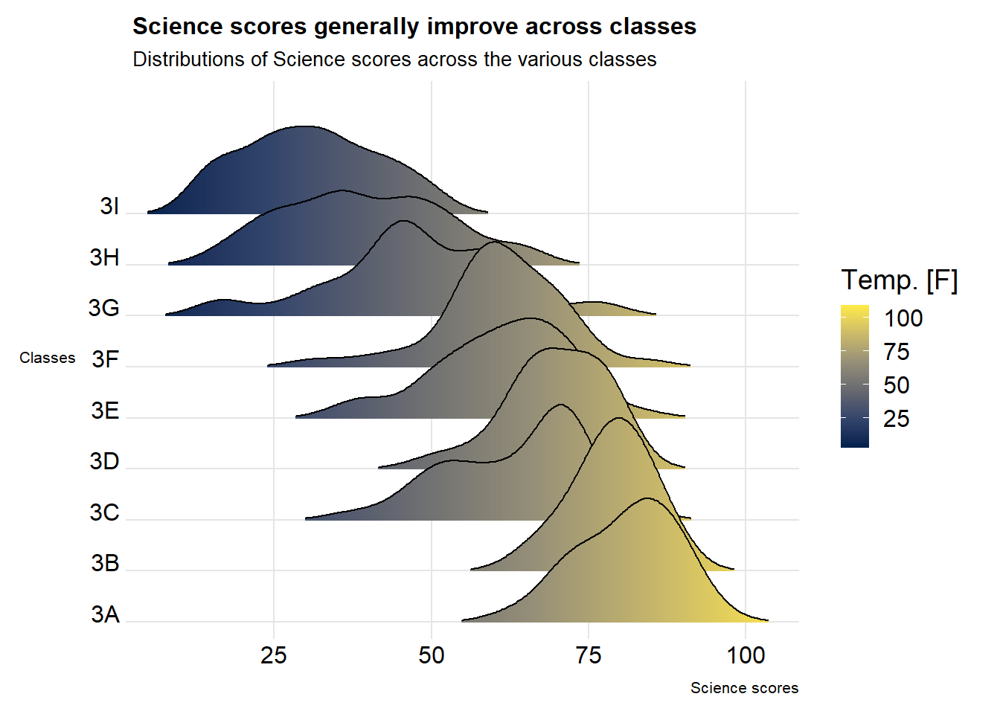
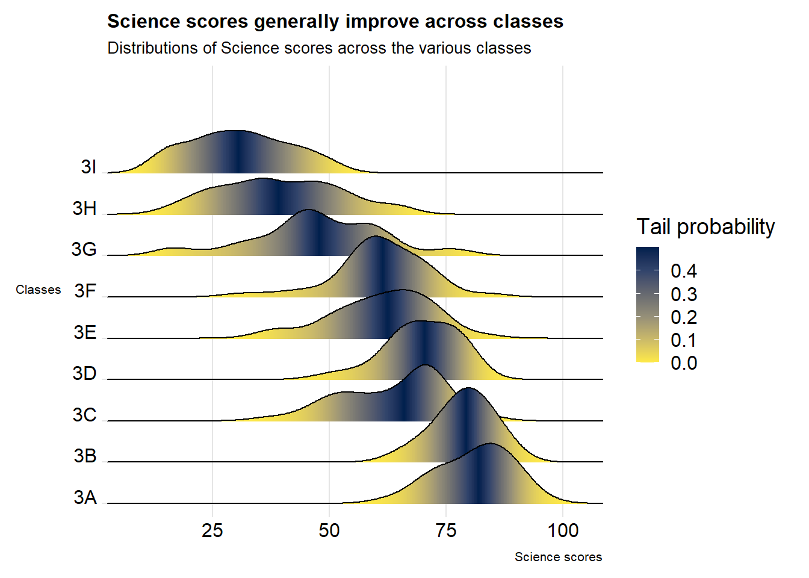

Hands-on Exercise 4 [In-Progress]
Fundamentals of Visual Analytics
1 Visualising Distribution
1.1 Overview
In this exercises I will practice visualising distribution using ridgeline plot and raincloud plot.
1.2 Getting started
1.2.1 Loading libraries
1.2.2 Importing data
The data used is the year end examination grades of a cohort of primary 3 students from a local school. From Hands-On Exercise 1, we know that the data has:
- Four categorical attributes: ID, CLASS, GENDER, RACE
- Three continuous attributes: MATHS, ENGLISH, SCIENCE
1.3 Visualising Distribution with Ridgeline Plot
Ridgeline plots make sense when the number of group to represent is medium to high, and thus a classic window separation would take to much space. Indeed, the fact that groups overlap each other allows to use space more efficiently. If you have less than 5 groups, dealing with other distribution plots is probably better.
It works well when there is a clear pattern in the result, like if there is an obvious ranking in groups. Otherwise group will tend to overlap each other, leading to a messy plot not providing any insight.sthetic
Let’s first demonstrate how we can make some graphs interactive with a tooltip.
1.3.1 Plotting ridgeline graph: ggridges method
ggridges package provides two main geom to plot gridgeline plots, they are: geom_ridgeline() and geom_density_ridges(). The former takes height values directly to draw the ridgelines, and the latter first estimates data densities and then draws those using ridgelines.

ggplot(exam_data,
aes(x = SCIENCE,
y = CLASS)) +
geom_density_ridges(
scale = 3, # set amount of overlap between the ridges
rel_min_height = 0.01, # Lines with heights below this cutoff will be removed.
bandwidth = 3.4,
fill = "#93c7c2", # change the fill colour
color = "white", # color of outline
alpha = 0.8, # transparency of fill
linewidth = 0.4
) +
scale_x_continuous(expand = c(0, 0)) +
scale_y_discrete(expand = expansion(add = c(0.2, 2.6))) +
theme_ridges() +
labs(title = "Science scores generall improve across classes",
subtitle = "Distributions of Science scores across the various classes",
x = "Science scores",
y = "Classes") +
theme(plot.title = element_text(size = 12),
plot.subtitle = element_text(size = 10),
axis.title.x = element_text(size = 8),
axis.title.y = element_text(size = 8, angle = 360))1.3.2 Varying fill colors along the x axis
Note that we can only change either fill colors or transparency, but not both.

ggplot(exam_data, aes(x = SCIENCE, y = CLASS, fill = stat(x))) +
geom_density_ridges_gradient(
scale = 3, # set amount of overlap between the ridges
rel_min_height = 0.01, # Lines with heights below this cutoff will be removed.
) +
scale_fill_viridis_c(name = "Temp. [F]",
option = "cividis") +
scale_x_continuous(expand = c(0, 0)) +
scale_y_discrete(expand = expansion(add = c(0.2, 2.6))) +
theme_ridges() +
labs(title = "Science scores generall improve across classes",
subtitle = "Distributions of Science scores across the various classes",
x = "Science scores",
y = "Classes") +
theme(plot.title = element_text(size = 12),
plot.subtitle = element_text(size = 10),
axis.title.x = element_text(size = 8),
axis.title.y = element_text(size = 8, angle = 360))1.3.3 Mapping the probabilities directly onto colour

ggplot(exam_data, aes(x = SCIENCE, y = CLASS, fill = stat(x))) +
geom_density_ridges_gradient(
scale = 3, # set amount of overlap between the ridges
rel_min_height = 0.01, # Lines with heights below this cutoff will be removed.
) +
scale_fill_viridis_c(name = "Temp. [F]",
option = "cividis") +
scale_x_continuous(expand = c(0, 0)) +
scale_y_discrete(expand = expansion(add = c(0.2, 2.6))) +
theme_ridges() +
labs(title = "Science scores generall improve across classes",
subtitle = "Distributions of Science scores across the various classes",
x = "Science scores",
y = "Classes") +
theme(plot.title = element_text(size = 12),
plot.subtitle = element_text(size = 10),
axis.title.x = element_text(size = 8),
axis.title.y = element_text(size = 8, angle = 360))